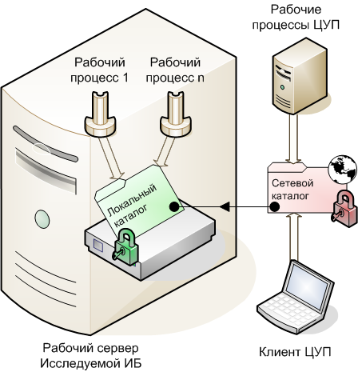

.png)
Следующим пользователям необходимо установить соответствующие права на локальные и сетевые каталоги сбора технологического журнала:
Принципиальная схема обращения ЦУП к каталогам технологического журнала исследуемой информационной базы выглядит так:
После остановки записи в технологический журнал исследуемой информационной базы, фоновые задания информационной базы ЦУП, работающие в рабочих процессах кластера информационной базы ЦУП, загружают созданный технологический журнал в информационную базу ЦУП и удаляют файлы технологического журнала. Для возможности чтения и удаления файлов и каталогов технологического журнала, у рабочих процессов ЦУП должны быть права чтения и записи (красный замок) в каталоги технологического журнала.
Доступ к каталогам настройки и сбора технологического журнала может осуществляться по сетевым путям, поэтому важно понимать, как настраиваются права доступа в данном случае. Ниже рассмотрен случай, когда на рабочем сервере исследуемой информационной базы расположены рабочие процессы и каталоги технологического журнала, к которым обращается ЦУП.

Рабочие процессы исследуемой информационной базы обращаются к локальному каталогу технологического журнала, поэтому у них должен быть доступ на чтение и запись к нему (зеленый замок).
Сетевой каталог можно рассматривать, как ссылку на локальный каталог, но при этом права доступа к сетевому каталогу настраиваются отдельно (красный замок). В результате, права доступа к сетевому ресурсу, это результат пересечения множества прав на локальный (зеленый замок) и сетевой каталоги (красный замок).
ВНИМАНИЕ: Для того, чтобы пользователь смог получить доступ к содержимому сетевого каталога, у него должны быть соответствующие права доступа сразу в локальный (зеленый замок) и сетевой каталог (красный замок). Следовательно, если у пользователя, обращающегося к сетевому ресурсу, не будет доступа к локальному или сетевому ресурсу, то в доступе будет отказано.
На каждом рабочем сервере кластера исследуемой информационной базы, необходимо настроить права доступа к каталогам технологического журнала для каждого пользователя, от имени которых запущены рабочие процессы кластера информационной базы ЦУП.
У пользователей, от имени которых запущены рабочие процессы кластеров, как исследуемой информационной базы, так и информационной базы ЦУП, должны быть права чтения и записи в этот каталог.
| Рабочие процессы ЦУП | Рабочие процессы исследуемой ИБ | |
| Право чтения | √ | √ |
| Право записи | √ | √ |
У пользователей, от имени которых запущены рабочие процессы кластера информационной базы ЦУП, должны быть права чтения и записи в сетевой каталог ТЖ.
| Рабочие процессы ЦУП | |
| Право чтения | √ |
| Право записи | √ |